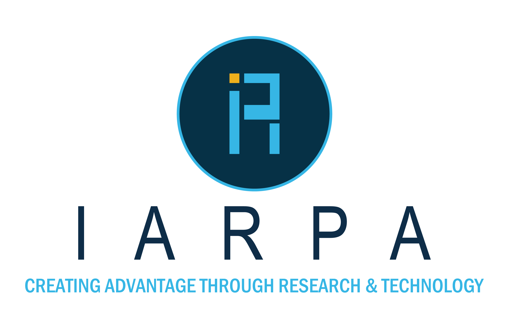
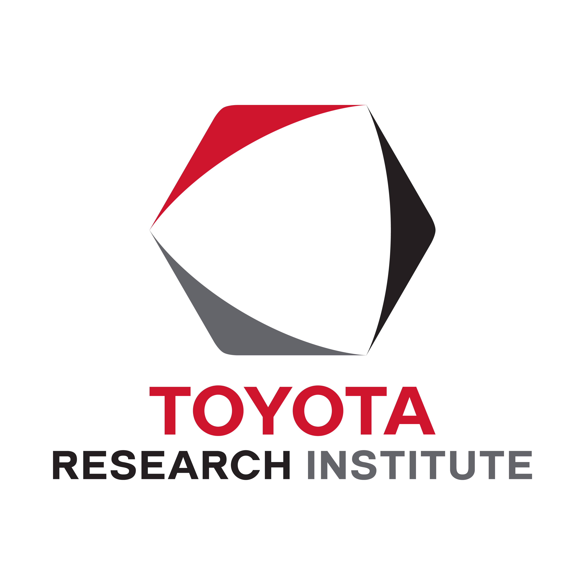
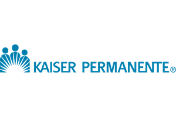
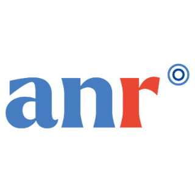

// Research support
Funding & Affiliations
AICS research is supported by federal agencies, industry partners, and private foundations. We are grateful to all our sponsors.
Active grants
| Project | Funder | Role | Period |
|---|---|---|---|
| (AI)nthropology in Action: An Ethnographic Study of Human-AI Co-Evolution and Design in Applied Research Administration | Human-AI Kaizen Initiative · Toyota Research Institute | — | Apr 2026–Apr 2027 |
| Machine Learning Prediction of Persistent Adverse Mental Health Outcomes for Autistic Children | NIH R01 · NICHD | Co-Investigator | Jul 2025–Jun 2030 |
| Phase-Aware Dynamic Models for Characterizing Evolving Complex Networks | DARPA MAGICS | Principal Investigator | Dec 2025–Dec 2026 |
| Generating Realistic Operations with Adaptable TTPs (GROAT) | DARPA A3ML | Co-PI | Dec 2025–Jun 2027 |
| AI-Driven Hospital Safety Incident Reporting | SoCal Healthcare Delivery Science Center | — | Aug 2025–Jul 2026 |
| A Hands-On Generative AI Laboratory for Applied LLM Practice and Experimentation | NSF ACCESS Explore | Principal Investigator | Sep 2025–Apr 2026 |
| DROIDDS: Data-Efficient, Robust, Ontology Induction for Deontic-Compliant Decision Support | DARPA CODORD | Co-PI | Feb 2025–Feb 2027 |
| Characterizing Gastrointestinal Disorder Trajectories for Autistic Sub-Groups | NIH R01 · NICHD | Co-Investigator | Aug 2024–Aug 2029 |
| Combating Human Trafficking | Kroner Family Foundation | Principal Investigator | Mar 2023–Dec 2025 |
Past funded projects · 17
| Project | Funder | Role | Period |
|---|---|---|---|
| Multi-modal Open World Grounded Learning and Inference (MOWGLI) | DARPA MCS | Principal Investigator | Aug 2019–Aug 2025 |
| Characterizing Tobacco and Cannabis Retailers Using AI | — | Co-PI | May–Aug 2025 |
| Healthcare Knowledge Graph | Kaiser Permanente | Principal Investigator | Since Mar 2022 |
| CHAIKMAT: Commonsense Knowledge & Hybrid AI for Trusted Flexible Manufacturing 4.0 | ANR (France) | Collaborating Researcher | Oct 2021 |
| Generating Novelty in Open-World Multi-Agent Environments (GNOME) | DARPA SAIL-ON | Principal Investigator | Dec 2019–Jun 2023 |
| Developing Artificial Intelligence Forecasting Questions | Open Philanthropy / Univ. of Maryland | Principal Investigator | Apr–Sep 2022 |
| A Global Study of Inclusion Correlates | USC Zumberge D&I Fund | Principal Investigator | Aug 2020–Sep 2021 |
| A COVID-19 Knowledge Graph Infrastructure for Assistive Expertise | Microsoft COVID-19 AI for Health | Principal Investigator | Jul 2020–Feb 2021 |
| Representation Learning for Product Graphs | Yahoo! FREP | Principal Investigator | Sep 2019–Sep 2020 |
| THOR: Text-enabled Humanitarian Operations in Real-time | DARPA LORELEI | Principal Investigator | Jun 2016–Jan 2020 |
| Discovery and Dismantling of Human Trafficking Networks | Keston Research Project | Principal Investigator | Jan 2019–Dec 2020 |
| Crisis Understanding using Intelligent Systems | USC URAP | Principal Investigator | Jul 2019 |
| ELICIT: Extracting and Organizing Causal Information | DARPA CauseEx | — | Aug 2017–Jan 2019 |
| DSBox: Data Scientist in a Box | DARPA D3M | — | Mar 2017–Jan 2019 |
| GAIA: Generating Alternatives for Interpretation and Analysis | DARPA AIDA | — | Jan–Aug 2018 |
| SAGE: Synergistic Anticipation of Geopolitical Events | IARPA HFC | — | Aug 2017–May 2018 |
| DIG: Domain-specific Insight Graphs | DARPA MEMEX | — | Jun 2016–Apr 2018 |
Our sponsors
DARPA
 NIH / NICHD
NIH / NICHD
 NSF
NSF

IARPA
Toyota Research Institute
Kaiser Permanente Microsoft
Microsoft
Yahoo!
Open Philanthropy

ANR (France)
Kroner Family Foundation
Keston Research Project